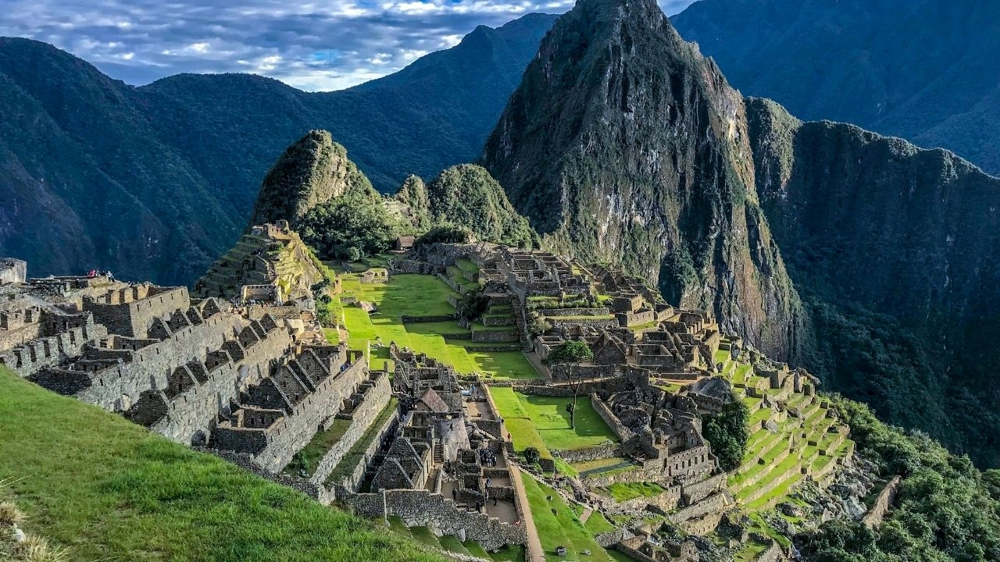
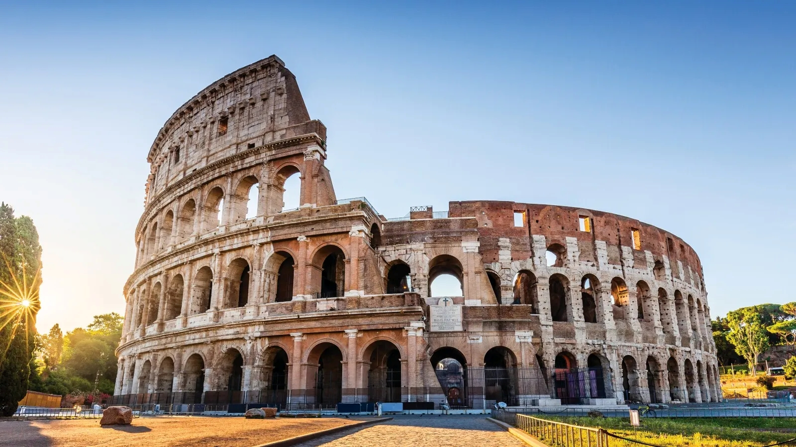
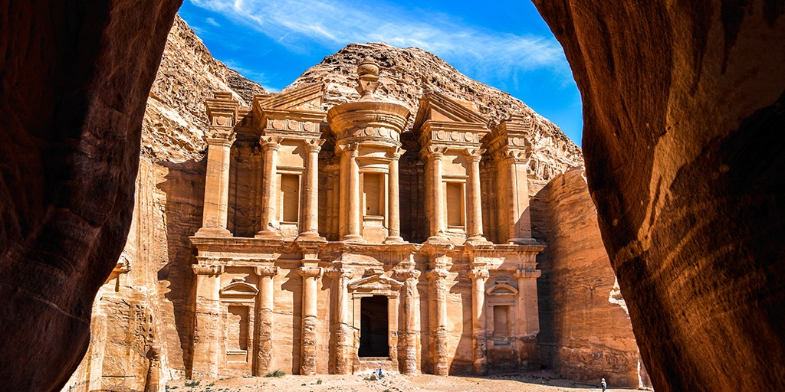

🇵🇪 PerúMachu Picchu
Antigua ciudad inca en lo alto de los Andes, famosa por su arquitectura de piedra y su impresionante entorno montañoso.
✦ Patrimonio de la Humanidad ✦
Monumentos extraordinarios que desafían el tiempo, el ingenio y la imaginación humana a lo largo de todos los continentes.

🇵🇪 PerúAntigua ciudad inca en lo alto de los Andes, famosa por su arquitectura de piedra y su impresionante entorno montañoso.
 🇲🇽 México
🇲🇽 México
Ciudad maya con la pirámide de Kukulkán, reflejo de los avanzados conocimientos astronómicos de esta civilización.
 🇧🇷 Brasil
🇧🇷 Brasil
Estatua monumental que vigila Río de Janeiro desde el Corcovado, símbolo de fe y hospitalidad brasileña.

🇮🇹 ItaliaEl anfiteatro más grande del Imperio Romano, centro de espectáculos y la vida social de la antigua Roma.
 🇮🇳 India
🇮🇳 India
Mausoleo de mármol blanco construido por el emperador Shah Jahan como el máximo monumento al amor eterno.

🇯🇴 JordaniaLa ciudad nabatea esculpida directamente en los acantilados de arenisca color rosado de Jordania.
 🇨🇳 China
🇨🇳 China
Extensa fortificación de más de 21,000 km, una de las mayores hazañas de ingeniería de la humanidad.